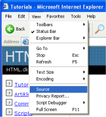

Lição 2: O que é HTML?
Esta lição apresentará à você seu novo amigo, o HTML.
O que é HTML?
HTML é a "língua mãe" do seu navegador.
Resumindo uma longa história, HTML foi inventado em 1990 por um cientista chamado Tim Berners-Lee. A finalidade inicial era a de tornar possível o acesso e a troca de informações e de documentação de pesquisas, entre cientistas de diferentes universidades. O projeto inicial tornou-se um sucesso jamais imaginado por Tim Berners-Lee. Ao inventar o HTML ele lançou as fundações da Internet tal como a conhecemos atualmente.
HTML é uma linguagem que possibilita apresentar informações (documentação de pesquisas científicas) na Internet. Aquilo que você vê quando abre uma página na Internet é a interpretação que seu navegador faz do HTML. Para visualizar o código HTML de uma página use o menu "View" (Ver) no topo do seu navegador e escolha a opção "Source" (Código fonte).

Para quem não conhece, o código HTML pode parecer complicado, mas este tutorial irá tornar as coisas claras para você.
Para que devo usar o HTML?
Se você quer construir websites terá que conhecer HTML. Mesmo que você use um programa para criar seu website, tal como o Dreamweaver, um conhecimento básico de HTML será necessário para tornar as coisas mais simples e para criar um website de melhor qualidade. A boa notícia é que HTML é fácil de aprender e de usar. A partir das duas próximas lições você já terá aprendido como construir seu primeiro website.
HTML é usado para construir websites. É simples!
OK, mas o que significa H-T-M-L?
HTML é a abreviatura de "HyperText Mark-up Language" - e isto é tudo o que você precisa saber por enquanto. Contudo, vamos detalhar isto.
- Hyper é o oposto de linear. Nos tempos antigos - quando mouse era apenas um rato caçado por gatos - os programas de computadores rodavam linearmente: quando o programa executava uma ação tinha que esperar a próxima linha de comando para executar a próxima ação e assim por diante de linha em linha. Com HTML as coisas são diferentes - você pode ir de onde estiver para onde quiser. Exemplificando: não é necessário que você tenha visitado o site MSN.com antes de visitar o site HTML.net.
- Text é texto e não há mais nada a acresentar.
- Mark-up significa marcação e é o texto que você escreve. Você cria a marcação da mesma forma que escreve em um editor seus cabeçalhos, marcadores, negrito, etc
- Language significa linguagem e é exatamente o que HTML é; uma linguagem. A linguagem HTML usa muitas palavras do inglês.
Neste tutorial você aprenderá XHTML (Extensible HyperText Mark-up Language) que nada mais é do que uma maneira mais bem estruturada de escrever HTML.
Agora que você já sabe o que é HTML (e XHTML) vamos começar aplicando eles para: construir websites.